16. Causal Inference: Mixed Backends (CRP+SB) - Cauchy/Laplace
Source:vignettes/legacy/v16-causal-same-backend-CRP.Rmd
v16-causal-same-backend-CRP.RmdLegacy vignette (for the website / historical notes). These files may not match the current exported API one-to-one. Last verified: 2026-01-18.
For the up-to-date workflow, see the main package vignettes (Introduction, Model Spec, MCMC Workflow, Unconditional/Conditional/Causal, Backends, S3 Reference).
Theory (brief)
The causal workflow fits treated and control arms with covariate adjustment, optionally including propensity scores. Backend choices control how mixtures are represented but target the same posterior quantities.
Causal Inference: Mixed Backends (CRP+SB)
This vignette fits two causal models using different backends and kernels:
- Model A: CRP bulk-only (Cauchy)
- Model B: SB with GPD tail (Laplace)
Each model demonstrates the full causal S3 workflow: bundle, fit, predict, plot, ATE, and QTE.
Data Setup
data("causal_alt_real500_p4_k2")
y <- causal_alt_real500_p4_k2$y
T <- causal_alt_real500_p4_k2$T
X <- as.matrix(causal_alt_real500_p4_k2$X)
summary_tbl <- tibble(
statistic = c("N", "Mean", "SD", "Min", "Max"),
value = c(length(y), mean(y), sd(y), min(y), max(y))
)
summary_tbl %>%
mutate(value = signif(value, 4)) %>%
kable(caption = "Causal Dataset Summary", align = "c") %>%
kable_styling(bootstrap_options = c("striped", "hover"), full_width = FALSE, position = "center")| statistic | value |
|---|---|
| N | 500.000 |
| Mean | 0.274 |
| SD | 1.764 |
| Min | -8.089 |
| Max | 5.275 |
x_eval <- X[1:40, , drop = FALSE]
y_eval <- y[1:40]
u_threshold <- as.numeric(stats::quantile(y, 0.8, names = FALSE))
df_causal <- data.frame(y = y, T = as.factor(T), x1 = X[, 1], x2 = X[, 2])
p_scatter <- ggplot(df_causal, aes(x = x1, y = y, color = T)) +
geom_point(alpha = 0.5) +
labs(title = "Outcome vs X1 by Treatment", x = "X1", y = "y", color = "Treatment") +
theme_minimal()
p_scatter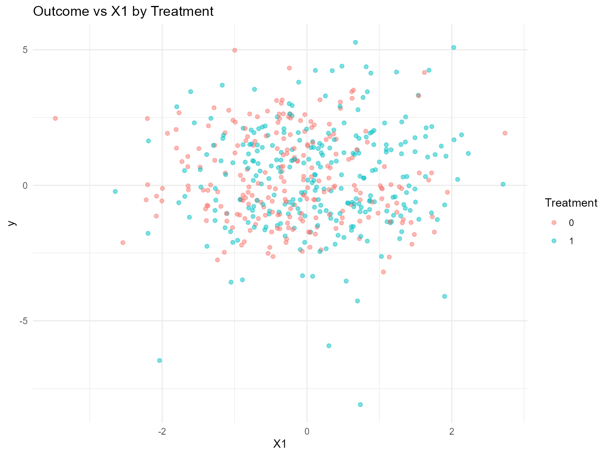
Model A: CRP Bulk-only (Cauchy)
bundle_crp_bulk <- build_causal_bundle(
y = y,
T = T,
X = X,
kernel = "cauchy",
backend = "crp",
PS = "logit",
GPD = FALSE,
components = 5,
mcmc_outcome = list(niter = 2500, nburnin = 500, nchains = 1, thin = 1, seed = 1),
mcmc_ps = list(niter = 2500, nburnin = 500, nchains = 1, thin = 1, seed = 1)
)
bundle_crp_bulkDPmixGPD causal bundle
PS model: disabled
Outcome (treated): backend = crp | kernel = cauchy
Outcome (control): backend = crp | kernel = cauchy
GPD tail (treated/control): FALSE / FALSE
components (treated/control): 5 / 5
Outcome PS included: FALSE
epsilon (treated/control): 0.025 / 0.025
n (control) = 232 | n (treated) = 268
summary(bundle_crp_bulk)DPmixGPD causal bundle summary
DPmixGPD causal bundle
PS model: disabled
Outcome (treated): backend = crp | kernel = cauchy
Outcome (control): backend = crp | kernel = cauchy
GPD tail (treated/control): FALSE / FALSE
components (treated/control): 5 / 5
Outcome PS included: FALSE
epsilon (treated/control): 0.025 / 0.025
n (control) = 232 | n (treated) = 268
fit_crp_bulk <- quiet_mcmc(run_mcmc_causal(bundle_crp_bulk))
summary(fit_crp_bulk)
-- Outcome fits --
[control]
MixGPD fit | backend: Chinese Restaurant Process | kernel: Cauchy Distribution | GPD tail: FALSE
n = 232 | components = 5 | epsilon = 0.025
MCMC: niter=2500, nburnin=500, thin=1, nchains=1
Fit
Use summary() for posterior summaries; plot() for diagnostics; predict() for predictions.
[treated]
MixGPD fit | backend: Chinese Restaurant Process | kernel: Cauchy Distribution | GPD tail: FALSE
n = 268 | components = 5 | epsilon = 0.025
MCMC: niter=2500, nburnin=500, thin=1, nchains=1
Fit
Use summary() for posterior summaries; plot() for diagnostics; predict() for predictions.
params(fit_crp_bulk)Posterior mean parameters (causal)
[treated]
Posterior mean parameters
$alpha
[1] "0.415"
$w
[1] "0.535" "0.448"
$location
[1] "0.765" "-0.272"
$scale
[1] "0.644" "0.53"
[control]
Posterior mean parameters
$alpha
[1] "0.632"
$w
[1] "0.417" "0.302" "0.219"
$location
[1] "-0.046" "0.662" "-0.17"
$scale
[1] "0.524" "0.523" "0.418"
plot(fit_crp_bulk, params = "location", family = "traceplot")
=== treated ===
=== traceplot ===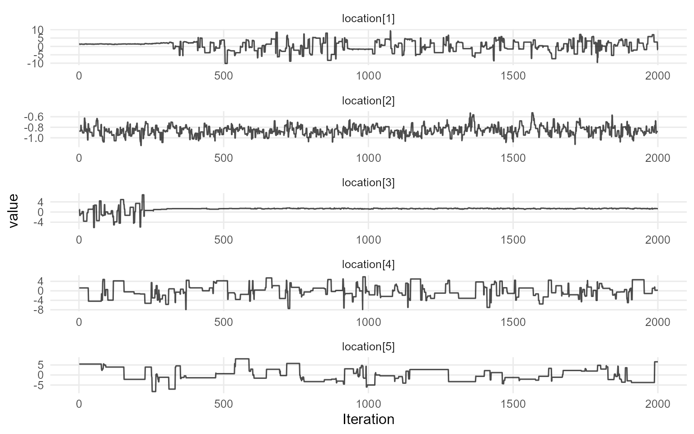
=== control ===
=== traceplot ===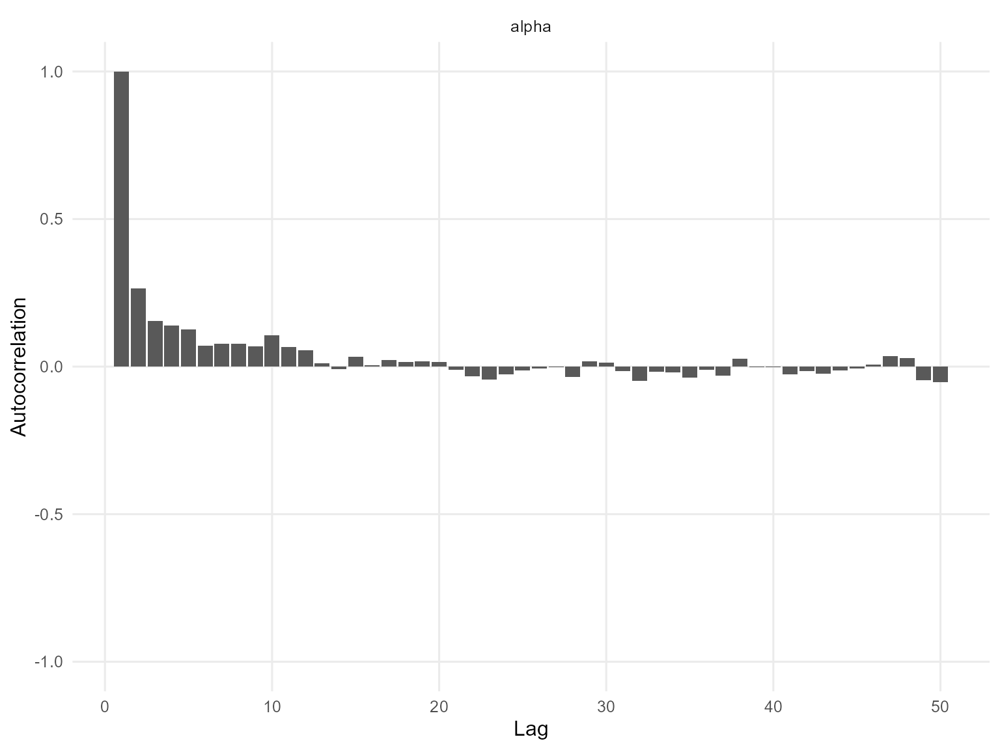
plot(fit_crp_bulk, params = "scale", family = "caterpillar")
=== treated ===
=== caterpillar ===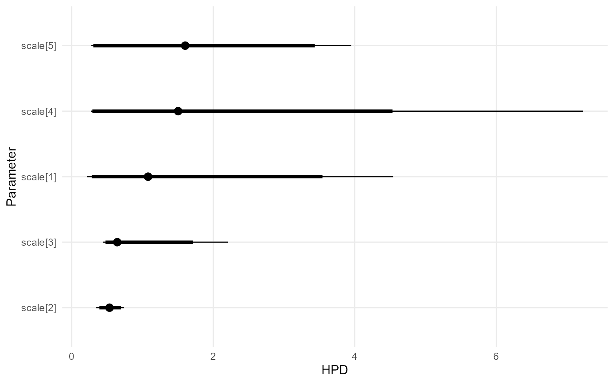
=== control ===
=== caterpillar ===
pred_mean_bulk <- predict(fit_crp_bulk, x = x_eval, type = "mean",
interval = "hpd", nsim_mean = 100)
head(pred_mean_bulk) ps estimate lower upper
[1,] NA -0.0194 -2.9257 1.325
[2,] NA 0.1036 0.2943 -0.673
[3,] NA -0.9065 -0.0552 2.588
[4,] NA -12.7823 -0.3879 2.614
[5,] NA 2.5011 -1.4858 1.941
[6,] NA 0.9312 -0.5459 3.226
plot(pred_mean_bulk)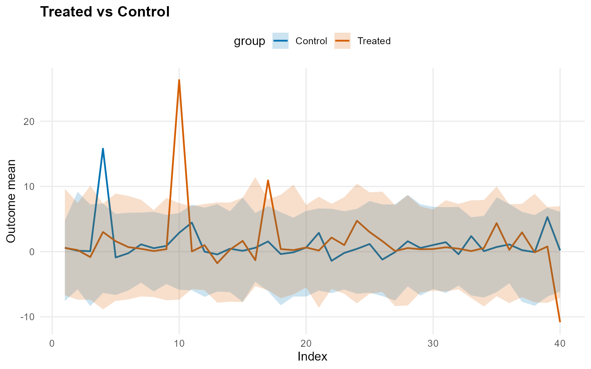
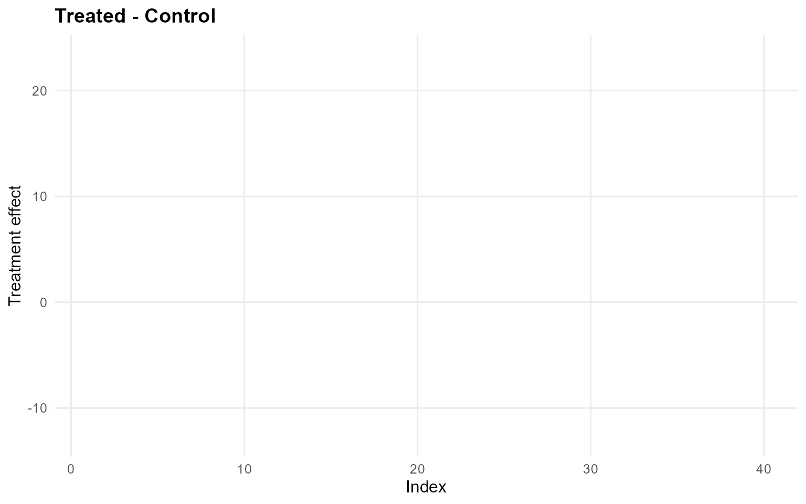
pred_q_bulk <- predict(fit_crp_bulk, x = x_eval, type = "quantile",
p = 0.5, interval = "hpd")
head(pred_q_bulk) ps estimate lower upper
[1,] NA 0.444 0.341 0.56
[2,] NA 0.444 0.341 0.56
[3,] NA 0.444 0.341 0.56
[4,] NA 0.444 0.341 0.56
[5,] NA 0.444 0.341 0.56
[6,] NA 0.444 0.341 0.56
plot(pred_q_bulk)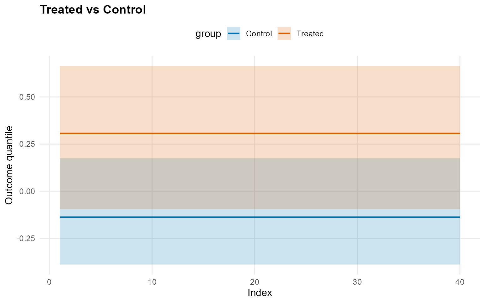
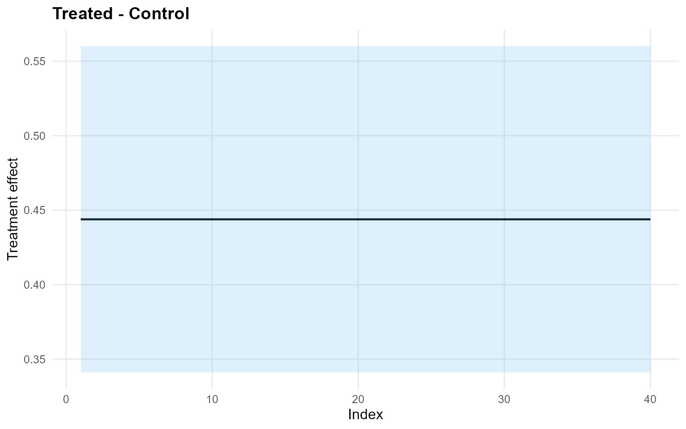
pred_d_bulk <- predict(fit_crp_bulk, x = x_eval, y = y_eval,
type = "density", interval = "hpd")
head(pred_d_bulk) y ps trt_estimate trt_lower trt_upper con_estimate con_lower con_upper
1 0.890 NA 1 0.1372 0.2606 1 0.0555 0.1498
2 -1.342 NA 1 0.1174 0.2241 1 0.1337 0.3834
3 1.138 NA 1 0.1893 0.3204 1 0.0502 0.1771
4 -1.922 NA 1 0.0452 0.0867 1 0.0537 0.1249
5 -3.334 NA 1 0.0128 0.0224 1 0.0124 0.0223
6 0.939 NA 1 0.1488 0.2767 1 0.0572 0.1584
plot(pred_d_bulk)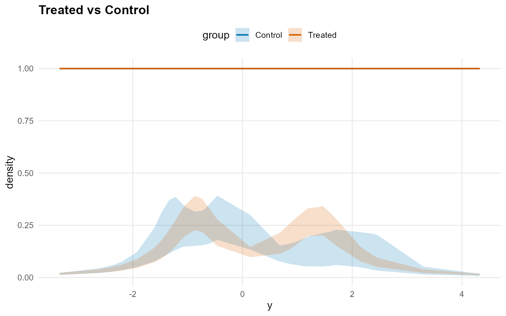
pred_surv_bulk <- predict(fit_crp_bulk, x = x_eval, y = y_eval,
type = "survival", interval = "hpd")
head(pred_surv_bulk) y ps trt_estimate trt_lower trt_upper con_estimate con_lower con_upper
1 0.890 NA 1 0.360 0.462 1 0.226 0.398
2 -1.342 NA 1 0.794 0.874 1 0.752 0.855
3 1.138 NA 1 0.306 0.416 1 0.184 0.364
4 -1.922 NA 1 0.872 0.922 1 0.870 0.924
5 -3.334 NA 1 0.933 0.956 1 0.937 0.962
6 0.939 NA 1 0.350 0.454 1 0.219 0.394
plot(pred_surv_bulk)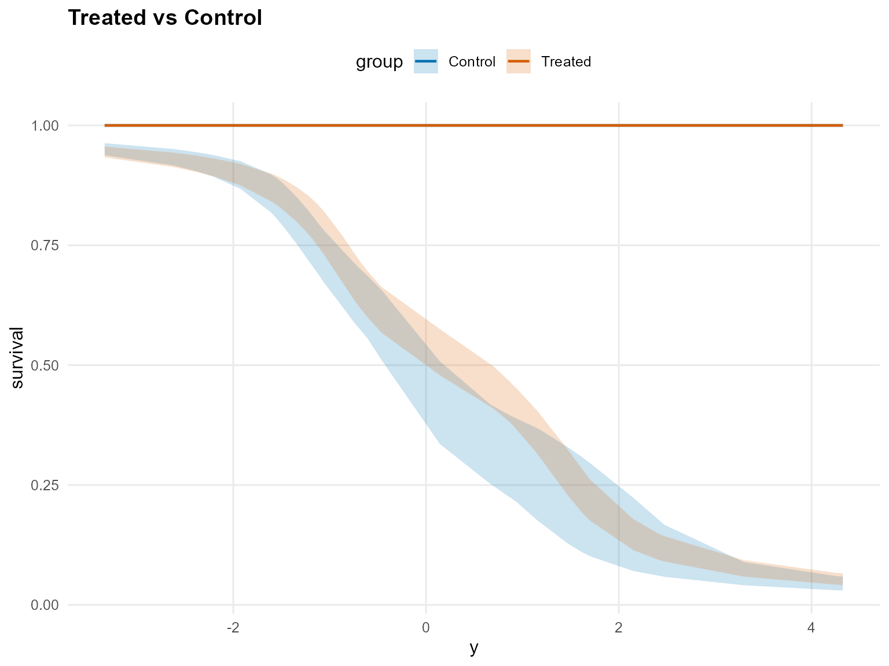
ATE (Average Treatment Effect)
Prediction points: 40
Conditional (covariates): YES
Propensity score used: NO
Posterior mean draws: 100
Credible interval: hpd
ATE estimates (treated - control):
id estimate lower upper
1 -0.451 -14.326 13.809
2 -2.438 -12.744 11.198
3 1.408 -15.421 14.129
4 -0.517 -13.878 11.673
5 0.395 -12.374 19.236
6 -3.339 -13.126 15.035
... (34 more rows)
summary(ate_bulk)ATE Summary
==================================================
Prediction points: 40
Conditional: YES | PS used: NO
Posterior mean draws: 100
Interval: hpd
Model specification:
Backend (trt/con): crp / crp
Kernel (trt/con): cauchy / cauchy
GPD tail (trt/con): NO / NO
ATE statistics:
Mean: 0.531 | Median: -0.017
Range: [-5.599, 12.005]
SD: 3.197
Credible interval width:
Mean: 27.207 | Median: 27.405
Range: [21.872, 33.46]
ate_plots_bulk <- plot(ate_bulk)
ate_plots_bulk$treatment_effect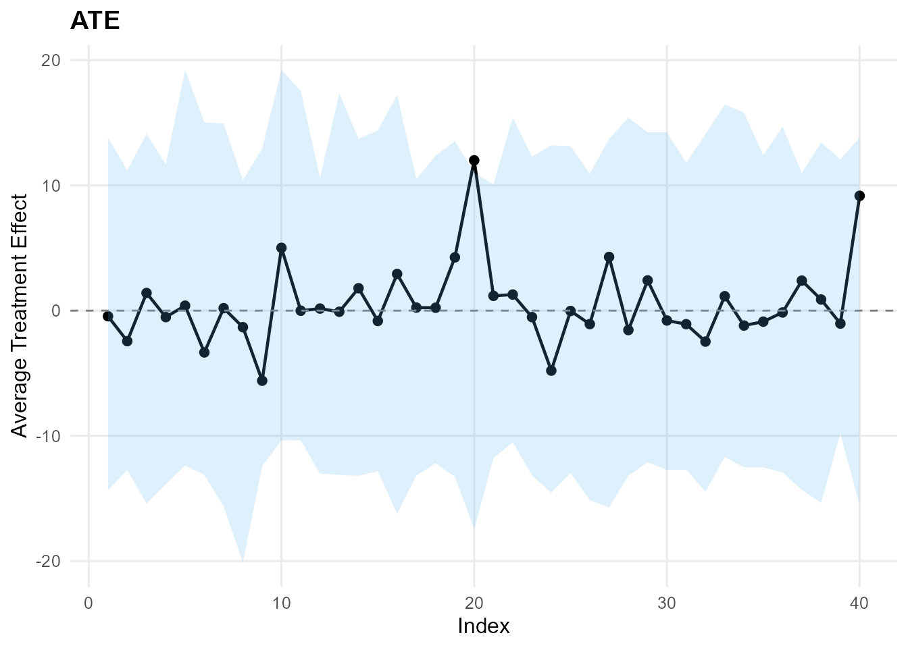
qte_bulk <- qte(fit_crp_bulk, probs = c(0.25, 0.5, 0.75),
newdata = x_eval, interval = "hpd")
print(qte_bulk)QTE (Quantile Treatment Effect)
Prediction points: 40
Quantile grid: 0.25, 0.5, 0.75
Conditional (covariates): YES
Propensity score used: NO
Credible interval: hpd
QTE estimates (treated - control):
index id estimate lower upper
0.25 1 0.127 -0.203 0.421
0.25 2 0.127 -0.203 0.421
0.25 3 0.127 -0.203 0.421
0.25 4 0.127 -0.203 0.421
0.25 5 0.127 -0.203 0.421
0.25 6 0.127 -0.203 0.421
... (114 more rows)
summary(qte_bulk)QTE Summary
==================================================
Prediction points: 40 | Quantiles: 3
Quantile grid: 0.25, 0.5, 0.75
Conditional: YES | PS used: NO
Interval: hpd
Model specification:
Backend (trt/con): crp / crp
Kernel (trt/con): cauchy / cauchy
GPD tail (trt/con): NO / NO
QTE by quantile:
quantile mean_qte median_qte min_qte max_qte sd_qte
0.25 0.127 0.127 0.127 0.127 0
0.5 0.444 0.444 0.444 0.444 0
0.75 0.015 0.015 0.015 0.015 0
Credible interval width:
Mean: 0.993 | Median: 0.984
Range: [0.624, 1.373]
qte_plots_bulk <- plot(qte_bulk)
qte_plots_bulk$treatment_effect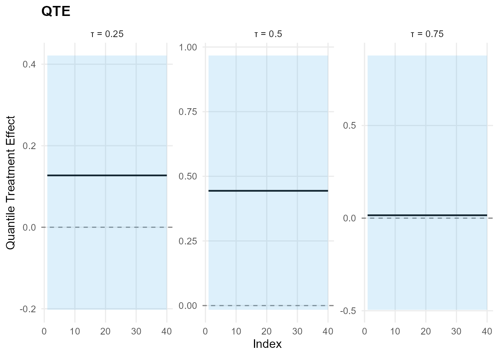
Model B: SB with GPD Tail (Laplace)
param_specs_gpd <- list(
gpd = list(
threshold = list(
mode = "dist",
dist = "lognormal",
args = list(meanlog = log(max(u_threshold, .Machine$double.eps)), sdlog = 0.25)
)
)
)
bundle_sb_gpd <- build_causal_bundle(
y = y,
T = T,
X = X,
kernel = "laplace",
backend = "sb",
PS = "logit",
GPD = TRUE,
components = 5,
param_specs = param_specs_gpd,
mcmc_outcome = list(niter = 2500, nburnin = 500, nchains = 1, thin = 1, seed = 2),
mcmc_ps = list(niter = 2500, nburnin = 500, nchains = 1, thin = 1, seed = 2)
)
bundle_sb_gpdDPmixGPD causal bundle
PS model: disabled
Outcome (treated): backend = sb | kernel = laplace
Outcome (control): backend = sb | kernel = laplace
GPD tail (treated/control): TRUE / TRUE
components (treated/control): 5 / 5
Outcome PS included: FALSE
epsilon (treated/control): 0.025 / 0.025
n (control) = 232 | n (treated) = 268
summary(bundle_sb_gpd)DPmixGPD causal bundle summary
DPmixGPD causal bundle
PS model: disabled
Outcome (treated): backend = sb | kernel = laplace
Outcome (control): backend = sb | kernel = laplace
GPD tail (treated/control): TRUE / TRUE
components (treated/control): 5 / 5
Outcome PS included: FALSE
epsilon (treated/control): 0.025 / 0.025
n (control) = 232 | n (treated) = 268
fit_sb_gpd <- quiet_mcmc(run_mcmc_causal(bundle_sb_gpd))
summary(fit_sb_gpd)
-- Outcome fits --
[control]
MixGPD fit | backend: Stick-Breaking Process | kernel: Laplace Distribution | GPD tail: TRUE
n = 232 | components = 5 | epsilon = 0.025
MCMC: niter=2500, nburnin=500, thin=1, nchains=1
Fit
Use summary() for posterior summaries; plot() for diagnostics; predict() for predictions.
[treated]
MixGPD fit | backend: Stick-Breaking Process | kernel: Laplace Distribution | GPD tail: TRUE
n = 268 | components = 5 | epsilon = 0.025
MCMC: niter=2500, nburnin=500, thin=1, nchains=1
Fit
Use summary() for posterior summaries; plot() for diagnostics; predict() for predictions.
params(fit_sb_gpd)Posterior mean parameters (causal)
[treated]
Posterior mean parameters
$alpha
[1] "0.968"
$w
[1] "0.549" "0.381"
$beta_location
x1 x2 x3 x4
comp1 "0.504" "0.275" "0.391" "1.531"
comp2 "-0.189" "0.098" "-0.124" "0.128"
comp3 "0.363" "-0.072" "-0.196" "0.221"
comp4 "0.343" "-0.173" "0.156" "0.098"
comp5 "0.198" "0.136" "-0.163" "-0.15"
$scale
[1] "1.393" "1.219"
$beta_tail_scale
[1] "0.115" "-0.134" "0.099" "-0.1"
$tail_shape
[1] "-0.007"
[control]
Posterior mean parameters
$alpha
[1] "1.219"
$w
[1] "0.436" "0.293"
$beta_location
x1 x2 x3 x4
comp1 "-0.218" "-0.019" "0.113" "0.128"
comp2 "0.054" "-0.054" "-0.166" "-0.665"
comp3 "0.023" "0.76" "-0.447" "2.135"
comp4 "-0.366" "-0.617" "-0.267" "0.987"
comp5 "-0.499" "-0.281" "-0.112" "0.994"
$scale
[1] "1.066" "1.019"
$beta_tail_scale
[1] "0.275" "0.197" "0.156" "-0.056"
$tail_shape
[1] "-0.043"
plot(fit_sb_gpd, family = "traceplot")
=== treated ===
=== traceplot ===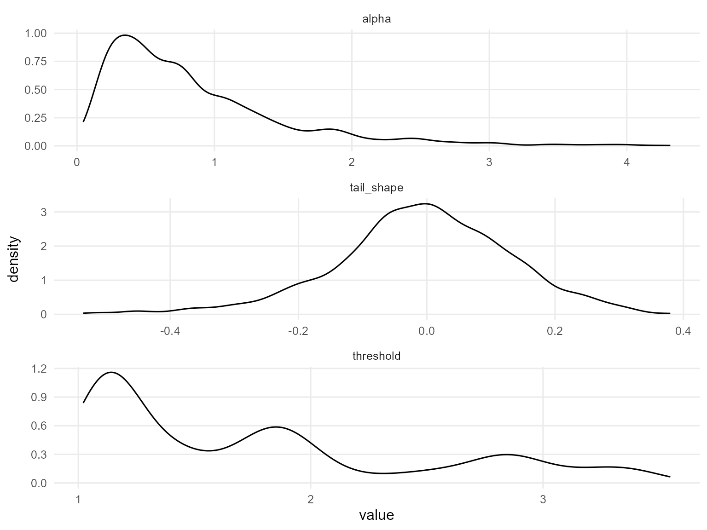
=== control ===
=== traceplot ===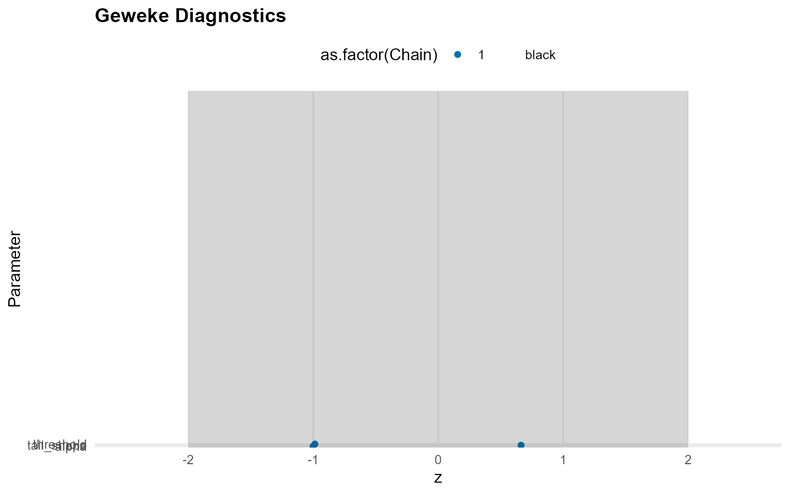
pred_mean_gpd <- predict(fit_sb_gpd, x = x_eval, type = "mean",
interval = "credible", nsim_mean = 100)
head(pred_mean_gpd) ps estimate lower upper
[1,] NA -0.171 1.82 -0.649
[2,] NA 1.498 2.39 -0.029
[3,] NA 0.604 1.37 -0.413
[4,] NA 0.957 1.58 -0.472
[5,] NA 1.038 2.06 -1.001
[6,] NA 0.607 2.95 -0.416
plot(pred_mean_gpd)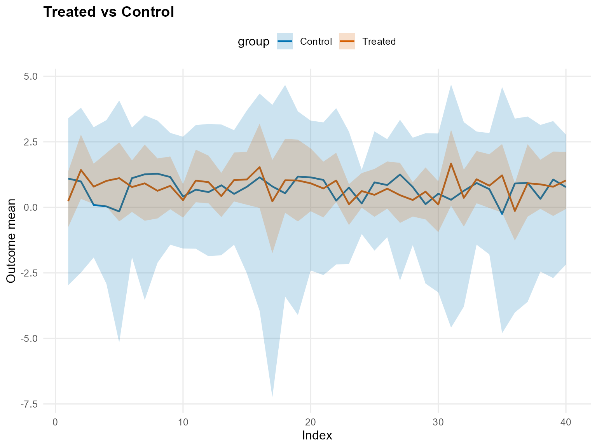
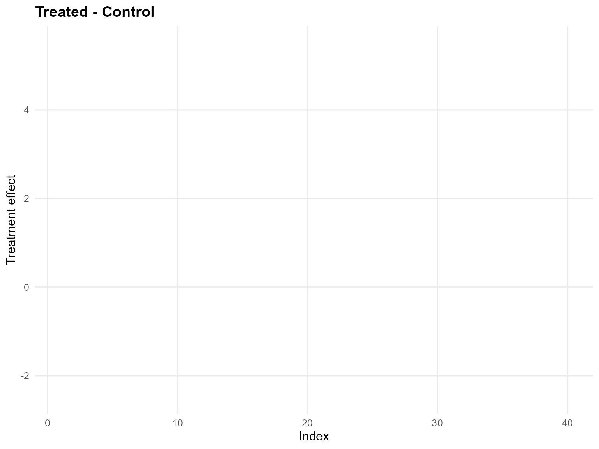
pred_q_gpd <- predict(fit_sb_gpd, x = x_eval, type = "quantile",
p = 0.5, interval = "credible")
head(pred_q_gpd) ps estimate lower upper
[1,] NA -0.253 2.97 -0.772
[2,] NA 1.140 2.36 -0.162
[3,] NA 0.450 1.29 -0.344
[4,] NA 0.745 1.47 -0.538
[5,] NA 0.921 1.52 -0.435
[6,] NA 0.425 3.21 -0.684
plot(pred_q_gpd)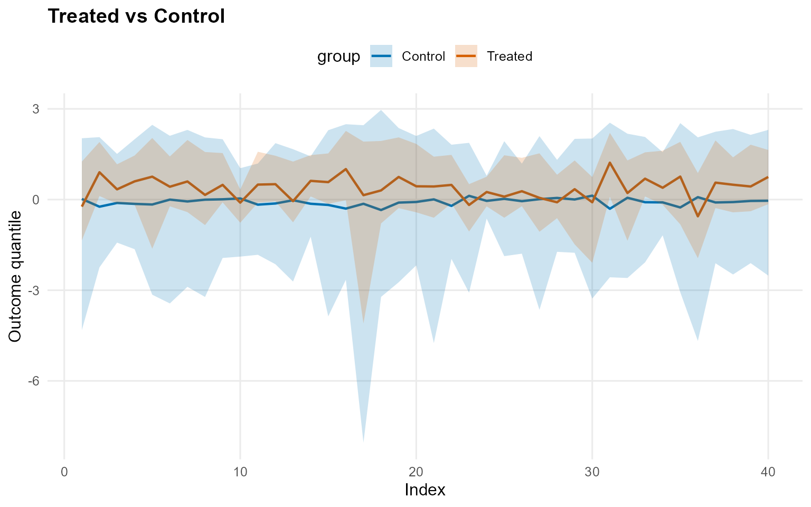
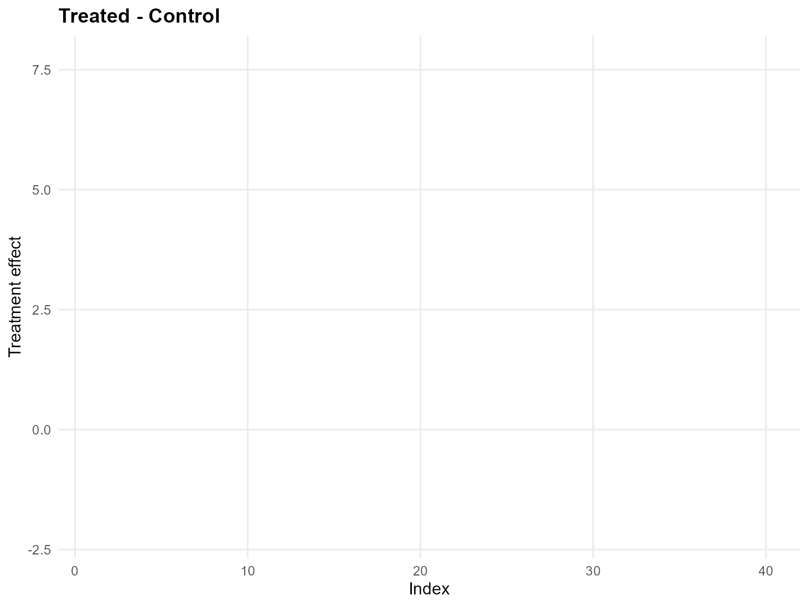
pred_d_gpd <- predict(fit_sb_gpd, x = x_eval, y = y_eval,
type = "density", interval = "credible")
head(pred_d_gpd) y ps trt_estimate trt_lower trt_upper con_estimate con_lower con_upper
1 0.890 NA 1 0.06945 0.311 1 0.03324 0.365
2 -1.342 NA 1 0.00660 0.240 1 0.05140 0.399
3 1.138 NA 1 0.15226 0.501 1 0.06380 0.336
4 -1.922 NA 1 0.02773 0.135 1 0.02881 0.326
5 -3.334 NA 1 0.00657 0.111 1 0.00375 0.269
6 0.939 NA 1 0.10860 0.359 1 0.03993 0.368
plot(pred_d_gpd)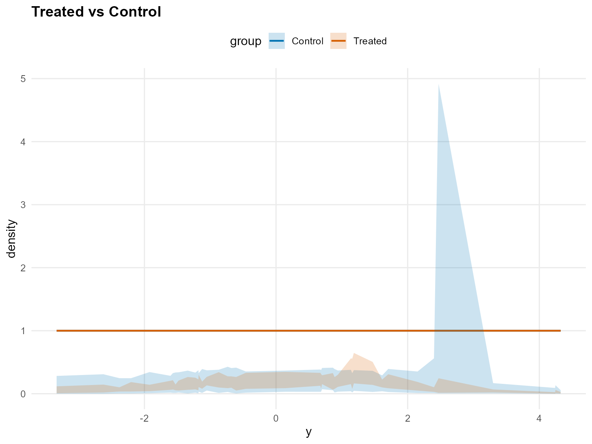
pred_surv_gpd <- predict(fit_sb_gpd, x = x_eval, y = y_eval,
type = "survival", interval = "credible")
head(pred_surv_gpd) y ps trt_estimate trt_lower trt_upper con_estimate con_lower con_upper
1 0.890 NA 1 0.129 0.619 1 0.0509 0.720
2 -1.342 NA 1 0.704 0.992 1 0.3323 0.945
3 1.138 NA 1 0.187 0.513 1 0.0621 0.567
4 -1.922 NA 1 0.828 0.966 1 0.5561 0.974
5 -3.334 NA 1 0.761 0.992 1 0.5322 0.997
6 0.939 NA 1 0.225 0.744 1 0.0377 0.709
plot(pred_surv_gpd)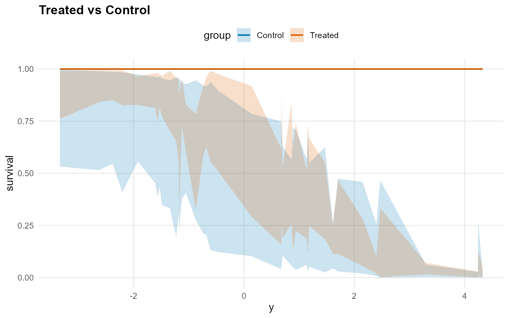
ATE (Average Treatment Effect)
Prediction points: 40
Conditional (covariates): YES
Propensity score used: NO
Posterior mean draws: 100
Credible interval: credible (95%)
ATE estimates (treated - control):
id estimate lower upper
1 -0.19 -2.331 2.968
2 1.499 -1.339 3.757
3 0.605 -1.308 2.153
4 0.962 -1.603 2.72
5 1.025 -2.862 4.004
6 0.588 -1.727 3.517
... (34 more rows)
summary(ate_gpd)ATE Summary
==================================================
Prediction points: 40
Conditional: YES | PS used: NO
Posterior mean draws: 100
Interval: credible (95%)
Model specification:
Backend (trt/con): sb / sb
Kernel (trt/con): laplace / laplace
GPD tail (trt/con): YES / YES
ATE statistics:
Mean: 0.642 | Median: 0.726
Range: [-0.547, 1.745]
SD: 0.507
Credible interval width:
Mean: 5.209 | Median: 5.067
Range: [1.933, 13.29]
ate_plots_gpd <- plot(ate_gpd)
ate_plots_gpd$treatment_effect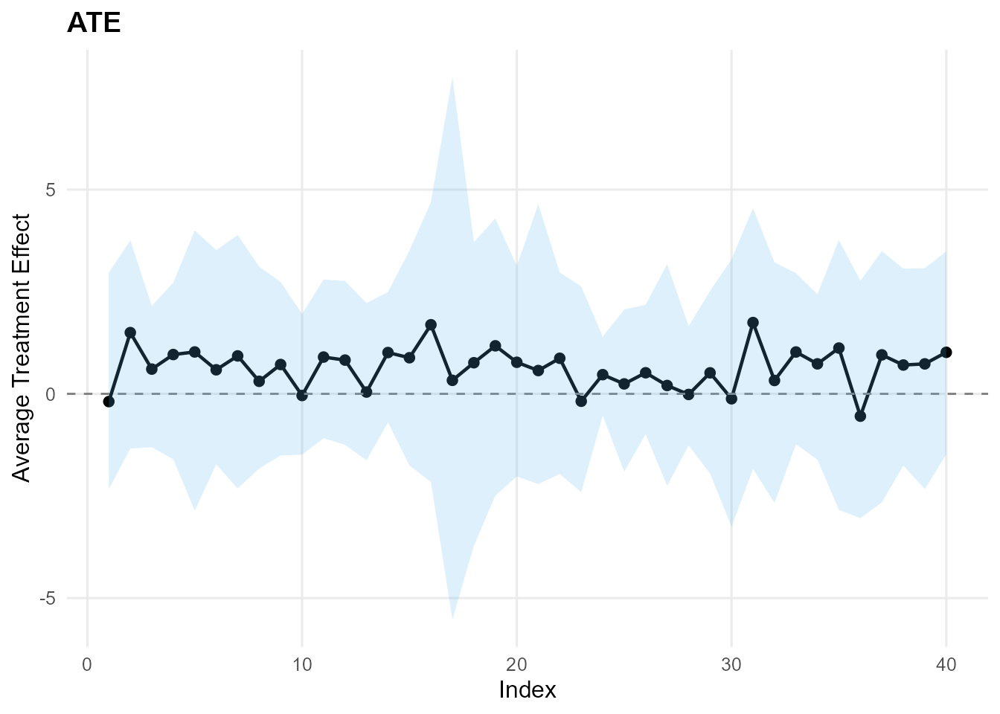
qte_gpd <- qte(fit_sb_gpd, probs = c(0.25, 0.5, 0.75),
newdata = x_eval, interval = "credible")
print(qte_gpd)QTE (Quantile Treatment Effect)
Prediction points: 40
Quantile grid: 0.25, 0.5, 0.75
Conditional (covariates): YES
Propensity score used: NO
Credible interval: credible (95%)
QTE estimates (treated - control):
index id estimate lower upper
0.25 1 -0.116 -2.163 5.13
0.25 2 0.708 -1.487 2.767
0.25 3 0.346 -0.721 2.293
0.25 4 0.555 -0.656 2.162
0.25 5 0.916 -1.929 4.064
0.25 6 0.577 -1.297 4.693
... (114 more rows)
summary(qte_gpd)QTE Summary
==================================================
Prediction points: 40 | Quantiles: 3
Quantile grid: 0.25, 0.5, 0.75
Conditional: YES | PS used: NO
Interval: credible (95%)
Model specification:
Backend (trt/con): sb / sb
Kernel (trt/con): laplace / laplace
GPD tail (trt/con): YES / YES
QTE by quantile:
quantile mean_qte median_qte min_qte max_qte sd_qte
0.25 0.425 0.499 -0.615 1.077 0.383
0.5 0.459 0.481 -0.633 1.525 0.454
0.75 0.512 0.551 -0.455 1.508 0.457
Credible interval width:
Mean: 4.605 | Median: 4.252
Range: [1.415, 13.635]
qte_plots_gpd <- plot(qte_gpd)
qte_plots_gpd$treatment_effect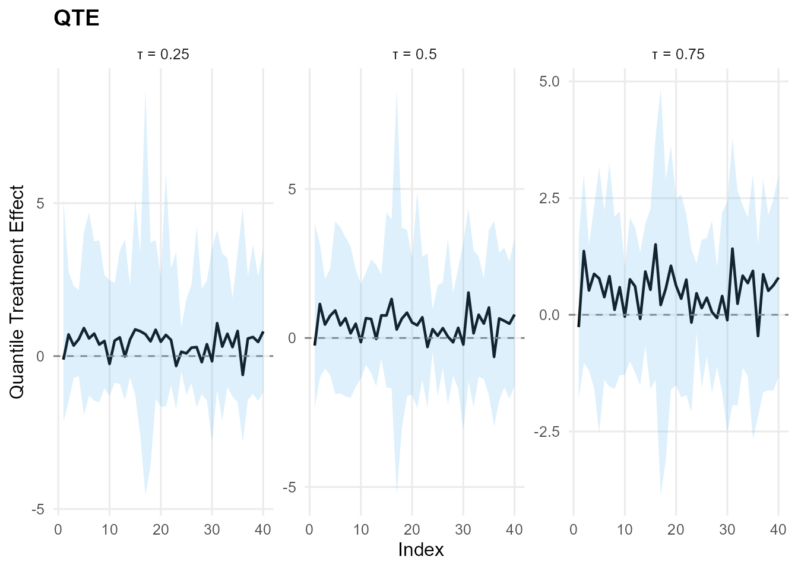